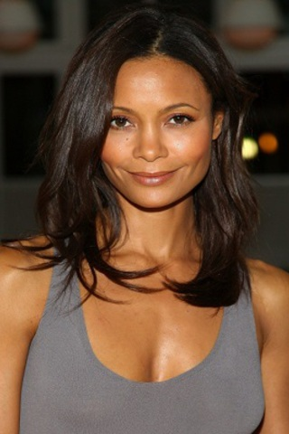

Kate Thomas
uma mulher simpática, doce e amável, além de bastante generosa. Foi o primeiro amor da vida de Norbit quando os dois ainda eram crianças no orfanato do Sr. Wong, até ela ser adotada e obviamente deixar para trás a vida no orfanato e consequentemente deixar Norbit. Os dois se reencontram anos depois quando Norbit já é casado com Rasputia e Kate é noiva do mau caráter Deion, por quem é ludibriada até certo ponto da história. Quando os dois se encontram, a chama da paixão de infância se reacende para ambos e nem mesmo os relacionamentos de cada um são capazes de impedir. Ao conhecer Rasputia, Kate é simpática com esta assim como é educada para com todos á sua volta, ainda assim tem que aguentar as grosserias dela e é o alvo principal do ciúme doentio de Rasputia por seu marido, uma vez que Rasputia odeia ver Kate perto de Norbit, temendo perder o seu lugar para a moça que é notavelmente mais bela e mais interessante em tudo. A intenção de Kate é comprar o orfanato do Sr. Wong e ampliá-lo, e Deion sabe disso, querendo usar a mesma compra para outros fins.
PERSONAGENS